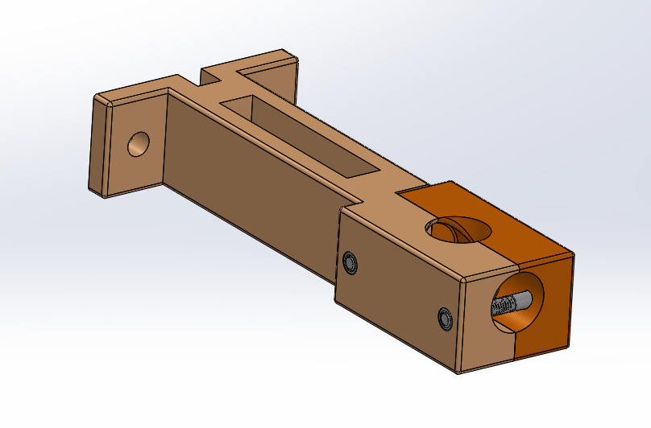
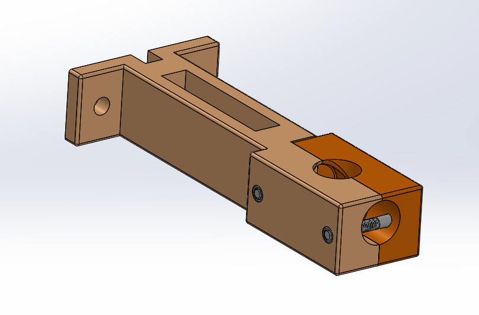

Approach
After being tasked with designing and prototyping fixtures, I developed a list of the design requirements
and started to sketch some ideas of how these fixtures would operate and function. For the button
compression and torque test fixtures, I started designing the fixtures in SOLIDWORKS. For the off-axis
tensile test fixture, I made a few dimensional design changes to the SOLIDWORKS model and test printed a
few prototypes using 3D printers. From there, I was able to test the fixture with a few sample parts and
characterize the test methods.
After finalizing the designs, I ordered the necessary parts from McMaster-Carr.
After a few trial test runs, the initial versions of the fixtures were developed and ready for testing.
Skills Employed
- SOLIDWORKS 3D CAD model
- 3D printing - FDM and SLA
- Machine shop manufacturing and tool use (tapping, drills, sanding)
- Test method characterization and development
- Testing fixture design/mechanical testing
- Instron Tensile and Compression Testing
 
